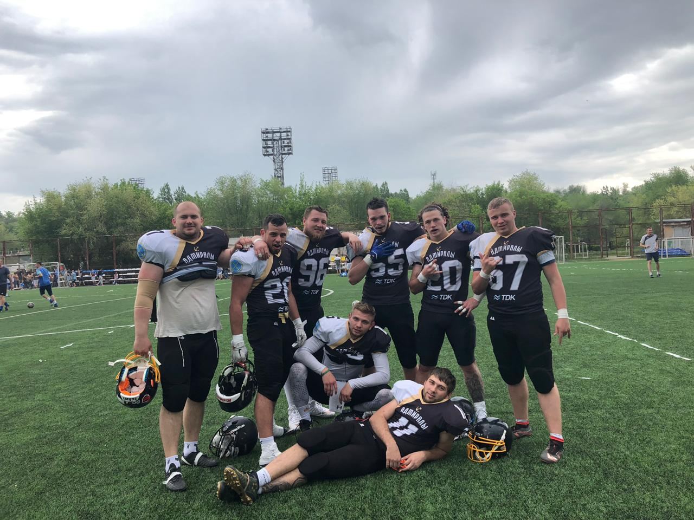
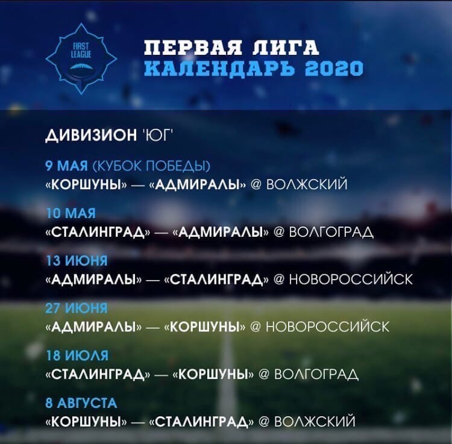

Cезон 2020 EESL (Eastern European SuperLeague)
планирую провести в составе
"Новороссийских Адмиралов".

Мы играем в Первой лиге, дивизионе "Юг", где по ходу сезона сыграем с
"Волжскими Коршунами", а также сo
"Сталинградом".
По итогам 6 игр, выявиться победитель дивизиона, который будет играть плей-офф с победителями других дивизионов в Москве, в начале осени.
Расписание дивизиональных игр:

Матч |
Дата матча |
Место проведения матча |
| "Коршуны"-"Адмиралы" |
09.05.2020 |
Волжский |
| "Сталинград"-"Адмиралы" |
10.05.2020 |
Волгоград |
| "Адмиралы"-"Сталинград" |
13.06.2020 |
Новороссийск |
| "Адмиралы"-"Коршуны" |
27.06.2020 |
Новороссийск |
| "Сталинград"-"Коршуны" |
18.07.2020 |
Волгоград |
| "Коршуны"-"Сталинград" |
08.08.2020 |
Волжский |
В основном буду играть на позиции DT(Defensive tackle), но также зайдествован на позиции MLB(Middle Linebacker).